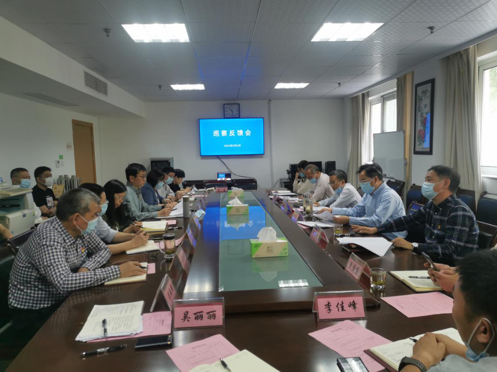

5月6日上午，省粮食物资局巡察一组召开巡察反馈会，向省粮食物资储备应急保障中心党总支反馈巡察意见。局党组成员、副局长，一级巡视员鲍伟民，局一级巡视员、巡察一组组长韩鹤忠，局巡察一组及巡察办相关人员出席会议。保障中心党总支书记黄俊主持会议并作表态发言，全体党员干部职工参加会议。
会上，韩鹤忠组长代表巡察一组向保障中心党总支反馈了本次巡察情况，肯定了保障中心党总支2019年成立以来的工作成绩，同时深刻指出了巡察发现的三方面14项具体问题， 并提出四个方面的整改意见建议。巡察办主任李成初传达了局党组有关会议精神，并代表局党组就下一步整改工作提出明确要求。
黄俊书记代表保障中心党总支对巡察组反馈意见照单全收，坚决做到立行立改、真纠真改、彻查彻改，并就下一步整改工作表态：一是提高站位，压实整改责任。围绕反馈问题，认真查摆、剖析原因、不折不扣抓好整改。 二是聚焦问题，坚持立行立改。从讲政治的高度，以最坚决的态度、最有力的举措落实整改任务，强化整改联动，确保问题清仓见底。三是建章立制，推动中心发展。中心上下要把整改落实作为当前的重大政治任务来抓， 以最严实的作风确保整改成效，全过程、全链条、全周期加强监督检查。进一步理清发展思路，细化工作措施，健全工作制度，为推动中心“两个保障”工作提供有力支撑。
局党组成员、副局长，一级巡视员鲍伟民到会并讲话。他强调，一是提高政治站位。要积极主动认领问题，照单全收，坚持举一反三，把问题的根源找深讲透，把问题找准做实。二是切实加强整改。 要将整改发现的问题落细落小落到实处，坚持问题导向，明确整改内容、整改目标、整改责任人和整改时限的“四张清单”，确保整改到位。三是建立长效机制。要进一步完善制度，细化举措，抓紧完成年度目标工作任务，以问题整改为契机扎实推进“两个保障”工作有序开展。